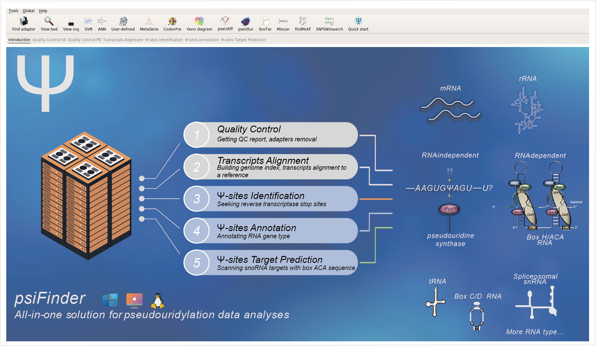

psiFinder
All-in-one solution for pseudouridylation data analyses.
Pseudouridine (Ψ) is a post-transcriptional RNA modification that functions in both structural non-coding RNAs and protein-coding RNAs. Recent progress in messenger RNA pseudouridylation discovered a considerable amount of mRNA Ψs but their mechanisms of biosynthesis and functions still remain elusive. Here, we developed a Ψ quantitative software, named psiFinder, to identify non-coding RNA Ψs and mRNA Ψs based on the chemical arrest of reverse transcription.
Contents:
- Installation
- Quality Control
- Transcripts Alignment
- Ψ-sites Identification
- Ψ-sites Annotation
- Ψ-sites Distribution
- Ψ-sites Codon Preference
- Ψ-sites snoRNA Target Prediction
- Ψ-sites miRNA Target Prediction
- Ψ-sites and snoRNA Interaction
- Ψ-sites Motif Searching
- Ψ-sites SNPs and SNVs Searching
- Ψ-sites Differential Modification
- Ψ-sites Functional Enrichment
- snakemake pipline
- Accessory Tools
- About psiFinder